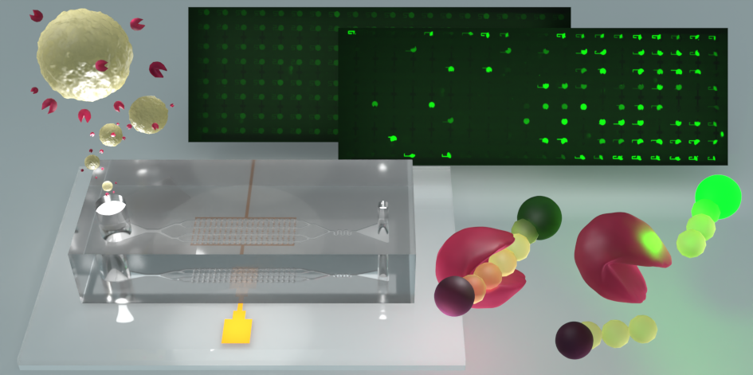
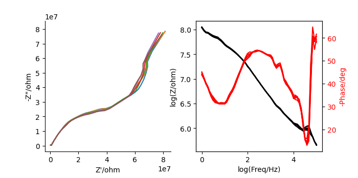
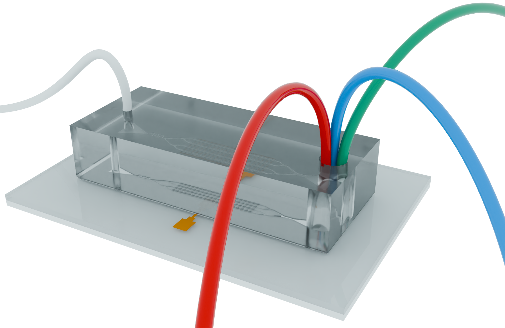
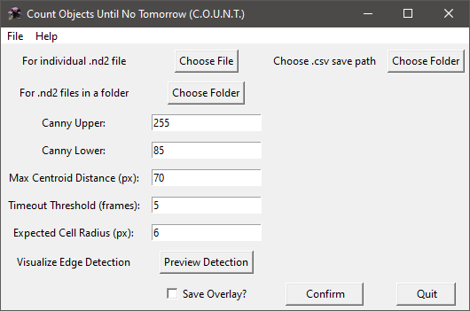
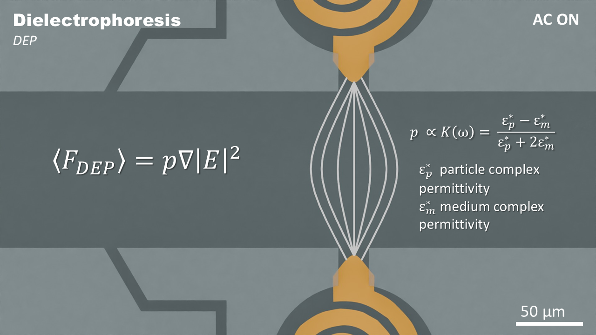
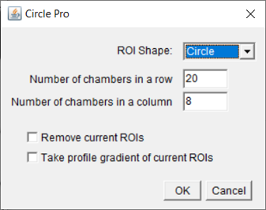
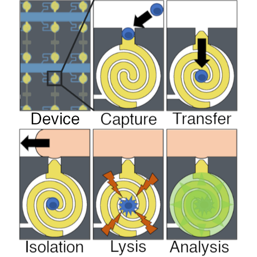

Light Mode
Here are some projects I've worked on in the Anand Lab.
Most of these projects are related to publications (emphasized in gold),
but I've included a few little projects / curiosity pursuits as well. I've simplified and
abridged
the project titles and descriptions compared to their published counterparts. If you are
interested
to learn more about my professional career, feel free to check out my resume/cv
and
Google
Scholar page.
I am also happy to connect on LinkedIn.
This page is a work in progress. I'm only providing limited information about
unpublished
work,
but I'm excited to share more soon!

My first publication as first author! I am very excited to have this work published! I plan to do a write up on what this project was all about soon, but I am so, so busy (5th year grad student).
Read more:Analytical skills, Python, Blender, Data analysis and visualization, grit

Check back for more info later!
PyTorch, CNNs, transfer learning, deep learning fundamentals.
Check back for more info later!
Machine Learning, Interpretable AI, Model Evaluation, CNNs, Transfer Learning
Pursuing my curiosity about machine learning

Random Forest Models, EIS
Enabling ML data collection by automating microfluidic operation.

You can find the code for this project on GitHub
Serial control over USB, interfacing hardware + software, multithreading, UI design

You can find the code for this project on GitHub
Computer vision, Python, UI, Git, OpenCV, APIs, Clean Code
ISU oral presentation competition

I competed in a department wide presentation competition on April 24, 2024! I made a really nice presentation about my work on the MMP9 project, using animations created in Blender. Blender is hard to learn but extremely powerful for scientific communication. I plan to write more about this soon!
Blender, scientific communication, professional presentations

Some of the first code I've ever wrote was in the ImageJ macro language using notepad. I was interested in improving the data analysis workflow for making measurements on fluorescence microscopy images. I wrote a series of macros that automatically place regions of interest (ROIs) over regions of interest, identify the presence of cancer cells, and made data collection easier. ImageJ is awesome!
See the code on GitHubImageJ Macro Language, image analysis/processing

I contributed towards this project while being trained by my mentor Joe. This project is about device optimizations and an investigation into single-cell β-galactosidase activity.
Read more:Lab skills, microfluidics, cleanroom skills, technical writing